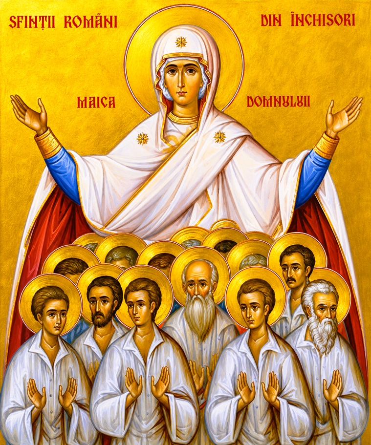

Acatistul Sfinților Mucenici Români din Închisori

Pomenirea Sfinților Mărturisitori și Mucenici ai temnițelor comuniste
Rugăciunile începătoare:
În numele Tatălui și al Fiului și al Sfântului Duh. Amin.
Slavă Ție, Dumnezeul nostru, Slavă Ție!
Împărate ceresc..., Sfinte Dumnezeule..., Preasfântă Treime..., Tatăl nostru...
Troparul Sfinților Mucenici și Mărturisitori din Închisori (Glasul 1)
Mărturisitorii cei adevărați ai lui Hristos
cu vitejie au stat împotriva uneltirilor satanei,
și nici prigoana, nici temnița,
nici chinurile, nici lanțurile nu i-au spăimântat,
ci cu putere de sus credința și neamul românesc au păzit.
Pentru rugăciunile lor, Hristoase Dumnezeule,
mântuiește sufletele noastre.
CONDACUL 1
Pe florile alese ale neamului românesc, pe sfinții mucenici care în temnițe și în munci grele au odrăslit, cu cântări de laudă să-i cinstim; că pe Hristos în inimile lor purtând și credința neclintită păstrând, biruit-au vicleniile vrăjmașului. Pentru aceasta, ca celor ce se roagă neîncetat pentru sufletele noastre, cu umilință să le strigăm: Bucurați-vă, sfinților mucenici, care în închisori pe Hristos L-ați mărturisit!
ICOSUL 1
Îngerească viață ați petrecut în întunericul temnițelor, sfinților mărturisitori, căci lumina lui Hristos a strălucit în inimile voastre, alungând teama și chinurile trupești. Pentru aceasta, minunându-ne de tăria credinței voastre, vă lăudăm așa:
- Bucurați-vă, odrasle sfințite ale neamului românesc;
- Bucurați-vă, că pe Hristos mai mult decât viața L-ați iubit;
- Bucurați-vă, cei ce în frig și foame de Dumnezeu v-ați lipit;
- Bucurați-vă, stâlpi ai Bisericii neclintiți de prigonitori;
- Bucurați-vă, rugători neobosiți pentru cei ce vă cinstitesc;
- Bucurați-vă, sfinților mucenici, care în închisori pe Hristos L-ați mărturisit!
CONDACUL 2
Văzând prigonitorii tăria credinței voastre, mai mult se îndârjeau cu munci și chinuri; dar voi, purtând în minte pătimirile Mântuitorului, cu răbdare le sufereați pe toate, cântând lui Dumnezeu: Aliluia!
ICOSUL 2
Neavând Biserică zidită în celulele întunecate, ați făcut din inimile voastre altare duhovnicești, unde Sfânta Liturghie în tăcere și rugăciune se săvârșea. De aceea vă strigăm:
- Bucurați-vă, biserici vii ale Duhului Sfânt;
- Bucurați-vă, că celula temniței altar de jertfă vi s-a făcut;
- Bucurați-vă, pilde de răbdare și neclintită nădejde;
- Bucurați-vă, biruitori ai duhurilor răutății;
- Bucurați-vă, sfinților mucenici, care în închisori pe Hristos L-ați mărturisit!
CONDACUL 3
Puterea Celui de Sus v-a umbrit în suferințele voastre, sfinților, dându-vă harul de a ierta pe cei ce vă chinuiau și de a vă ruga pentru prigonitorii voștri, cântând neîncetat: Aliluia!
ICOSUL 3
Inimi curate și pline de dragoste creștinească ați avut, împărțind bucata de pâine cu cei mai slabi și mângâind pe cei deznădăjduiți. Pentru această sfântă dragoste, vă aducem aceste laude:
- Bucurați-vă, pilde vii ale iubirii de aproapele;
- Bucurați-vă, mângâierea celor ce pătimeau în lanțuri;
- Bucurați-vă, că prin milostenie pe Hristos L-ați hrănit;
- Bucurați-vă, făclii ce ați luminat întunericul temnițelor;
- Bucurați-vă, sfinților mucenici, care în închisori pe Hristos L-ați mărturisit!
CONDACUL 4
Furtuna urii ateiste n-a putut stinge credința din sufletele voastre, căci ați fost zidiți pe piatra cea din capul unghiului, Hristos Dumnezeul nostru, Căruia I-ați cântat cu tărie: Aliluia!
ICOSUL 4
Auzit-au îngerii din ceruri rugăciunile voastre șoptite în noapte și au privit cu uimire la tăria duhovnicească cu care răbdați izolarea și loviturile. Drept aceea vă cântăm:
- Bucurați-vă, cei ce cu îngerii împreună v-ați rugat;
- Bucurați-vă, biruința smereniei asupra mândriei lumești;
- Bucurați-vă, că numele voastre sunt scrise în cartea vieții;
- Bucurați-vă, sprijinul nostru în vremuri de încercare;
- Bucurați-vă, sfinților mucenici, care în închisori pe Hristos L-ați mărturisit!
CONDACUL 5
Ca niște stele luminoase ați strălucit în noaptea prigoanei comuniste, arătând tuturor că dragostea de Dumnezeu este mai tare decât moartea. Pentru aceasta cântăm Ziditorului tuturor: Aliluia!
ICOSUL 5
Cei ce ați muncit până la epuizare în coloniile de muncă silnică de la Periprava, Aiud, Pitești, Gherla și Canal, ați sfințit pământul cu sudoarea și sângele vostru. De aceea vă fericim, zicând:
- Bucurați-vă, sfințitorii pământului românesc;
- Bucurați-vă, mucenici ai muncii silnice și ai foamei;
- Bucurați-vă, că trupurile voastre au fost jertfă curată;
- Bucurați-vă, cununi nevestejite primite din mâna Mântuitorului;
- Bucurați-vă, sfinților mucenici, care în închisori pe Hristos L-ați mărturisit!
CONDACUL 6
Propovăduitori ai Adevărului ați fost nu doar cu cuvântul, ci mai ales cu fapta și cu tăcerea voastră plină de har, făcând pe mulți să se întoarcă la Hristos și să Cânte: Aliluia!
ICOSUL 6
Strălucit-a în voi harul Preasfântului Duh, dându-vă putere să spovediți și să împărtășiți în taină pe cei muribunzi, aducând cerească mângâiere în celulele morții. Pentru aceasta vă aducem aceste laudative:
- Bucurați-vă, preoți și mărturisitori plini de râvnă sfântă;
- Bucurați-vă, tăinuitori ai Sfintelor Taine în vreme de prigoană;
- Bucurați-vă, că ați călăuzit sufletele spre Împărăția Cerurilor;
- Bucurați-vă, mijlocitori neobosiți la Scaunul Judecătorului;
- Bucurați-vă, sfinților mucenici, care în închisori pe Hristos L-ați mărturisit!
CONDACUL 7
Vrând vrăjmașul să vă zdrobească sufletește prin reeducări și torturi cumulite, ați rămas neclintiți în sfânta Ortodoxie, strigând din adâncul inimilor voastre către Dumnezeu: Aliluia!
ICOSUL 7
Nouă jertfă curată și bineplăcută Domnului s-a adus prin răbdarea voastră cea fără de seamăn. Pentru aceasta, Biserica strămoșească vă cinstește și vă laudă, zicând:
- Bucurați-vă, biruința credinței asupra necredinței;
- Bucurați-vă, turnuri neclintite ale neamului creștin;
- Bucurați-vă, pilde de bărbăție duhovnicească;
- Bucurați-vă, că prin suferință v-ați curățit ca aurul în lămpi;
- Bucurați-vă, sfinților mucenici, care în închisori pe Hristos L-ați mărturisit!
CONDACUL 8
Străină de duhul acestei lumi a fost purtarea voastră, căci n-ați căutat mărire sau scăpare trupească, ci doar mântuirea sufletului și dăinuirea credinței, cântând neîncetat: Aliluia!
ICOSUL 8
Cu totul v-ați dăruit lui Hristos, primind moartea mucenicească în celule reci sau în gropile comune necunoscute. Dar Dumnezeu a preamărit jertfa voastră, de aceea vă cântăm:
- Bucurați-vă, cei ale căror morminte sunt știute de Dumnezeu;
- Bucurați-vă, moaște sfințite tăinuite în pământul țării;
- Bucurați-vă, că mormintele voastre sunt altare de rugăciune;
- Bucurați-vă, rugători fierbinți pentru neamul românesc;
- Bucurați-vă, sfinților mucenici, care în închisori pe Hristos L-ați mărturisit!
CONDACUL 9
Toate cetele îngerești s-au bucurat văzând cum sufletele voastre, curățite prin focul încercărilor, se înălțau la ceruri purtând cununile biruinței și cântând: Aliluia!
ICOSUL 9
Ritorii cei mult vorbitori nu pot exprima în cuvinte adâncimea suferințelor voastre și nici măreția harului pe care l-ați primit de la Dumnezeu. Noi însă, cu smerenie, vă aducem aceste laude:
- Bucurați-vă, cunună de mult preț a Bisericii noastre;
- Bucurați-vă, că prin jertfă ați păstrat candela credinței aprinsă;
- Bucurați-vă, apărători ai adevărului și ai dreptății;
- Bucurați-vă, ocrotitori ai celor ce pătimesc în nevoi;
- Bucurați-vă, sfinților mucenici, care în închisori pe Hristos L-ați mărturisit!
CONDACUL 10
Vrând să fiți sprijin și pildă generațiilor viitoare, ați lăsat moștenire un tezaur de credință și demnitate creștină, învățându-ne pe toți să-I cântăm lui Dumnezeu: Aliluia!
ICOSUL 10
Zid de apărare sunteți țării noastre împotriva rătăcirilor și a necredinței, dăruindu-ne putere să urmăm calea Evangheliei. Pentru aceasta vă strigăm cu recunoștință:
- Bucurați-vă, păzitori ai valorilor noastre strămoșești;
- Bucurați-vă, că ne învățați să iertăm și să iubim;
- Bucurați-vă, scăparea celor din necazuri și strâmtorări;
- Bucurați-vă, făclii neastinse ale neamului românesc;
- Bucurați-vă, sfinților mucenici, care în închisori pe Hristos L-ați mărturisit!
CONDACUL 11
Cântare de mulțumire aducem Preasfintei Treimi, Care a dăruit neamului nostru asemenea sfinți mărturisitori și mijlocitori la Scaunul Dumnezeiesc, strigând cu bucurie: Aliluia!
ICOSUL 11
Lumină din Lumina lui Hristos emanați, sfinților, ajutându-ne să trecem peste valurile vieții și să păstrăm credința curată. De aceea, vă fericim zicând:
- Bucurați-vă, stele ce străluciți pe cerul Bisericii;
- Bucurați-vă, ajutători rapizi ai celor ce vă cheamă în rugăciuni;
- Bucurați-vă, vindecători ai sufletelor rănite de păcat;
- Bucurați-vă, pilde neclintite de smerenie și răbdare;
- Bucurați-vă, sfinților mucenici, care în închisori pe Hristos L-ați mărturisit!
CONDACUL 12
Harul lui Dumnezeu revărsat peste voi a făcut din suferința voastră o biruință veșnică. Rugați-vă pentru noi, sfinților, ca să primim iertare de păcate și să cântăm: Aliluia!
ICOSUL 12
Cântând jertfa și pătimirile voastre, sfinților mucenici din închisori, vă preamărim ca pe niște mari ocrotitori ai sufletelor noastre și vă aducem aceste sfinte laude:
- Bucurați-vă, cununa mucenicilor români;
- Bucurați-vă, că împreună cu toți sfinții vă bucurați în Rai;
- Bucurați-vă, mijlocitori stăruitori pentru mântuirea noastră;
- Bucurați-vă, nădejdea și sprijinul nostru în zi de încercare;
- Bucurați-vă, sfinților mucenici, care în închisori pe Hristos L-ați mărturisit!
CONDACUL 13
O, sfinților mucenici și mărturisitori ai lui Hristos, care în temnițele comuniste ați pătimit pentru credință și neam! Primiți această puțină rugăciune pe care v-o aducem cu smerenie și dragoste. Rugați-vă Milostivului Dumnezeu să ne izbăvească de toate necazurile, de necredință și de rătăciri, dăruindu-ne mântuire sufletească, ca împreună cu voi să-I cântăm în veci: Aliluia!
(Acest Condac se zice de trei ori. Apoi se zice iarăși Icosul 1 și Condacul 1).
Rugăciune către Sfinții Mucenici din Închisori
O, sfinților mărturisitori ai neamului românesc, care prin pătimiri și jertfă ați sfințit pământul țării și temnițele suferinței! Căutând spre voi cu umilință, vă rugăm să fiți mijlocitori la Scaunul Preasfintei Treimi pentru sufletele noastre. Păziți Biserica și poporul român de toate uneltirile vrăjmașilor văzuți și nevăzuți, dăruiți-ne credință neclintită, dragoste curată și răbdare în încercările vieții, ca împreună cu voi să slăvim pe Tatăl, pe Fiul și pe Sfântul Duh. Amin.